Conversation design lets you define what good looks like, based on real user needs, and what should happen
when things go wrong. It gives you a meaningful semantic structure to test against, both automatically and
manually — and the traceability of actions you need to be accountable for what the system is doing.
OVO
OVO
Translating business processes into UX flows
Task
Define what good behaviour looks like for a range of scenarios, happy and unhappy paths. Specify what we do and don’t want to happen.
Actions
Ran a workshop to define behaviours and create interaction policies
Mined conversation logs and training materials
Created an intent matrix mapped to correct process flow. Prioritised top contact topics
Created retrievable flows.
Result
A conversational architecture based on real needs and compliant business processes.
I ran a workshop to define behaviours and create our ‘interaction policies’, what we do and don’t want to happen.
I mined conversation logs, training materials and regulatory documents to find exemplary patterns.
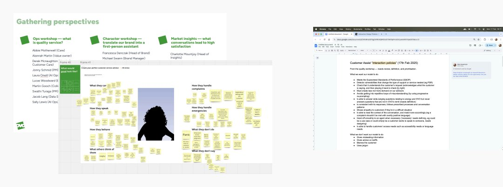
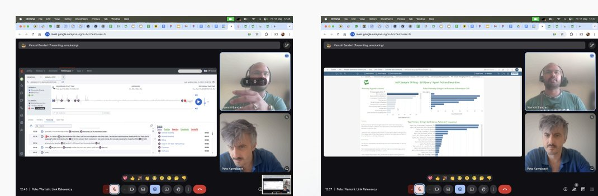
Together with Ops, I created an intent matrix, mapping user needs to the correct process flows. We then prioritised top contact topics.
I created retrievable UX flows for our model to use when it detected any given intent. Flows include intents, example utterances, the required slots, escalation logic, tone markers, repair paths, and example dialogue.
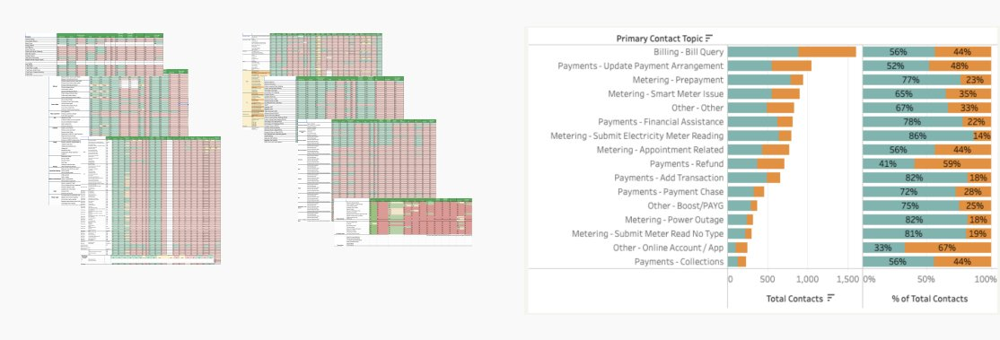
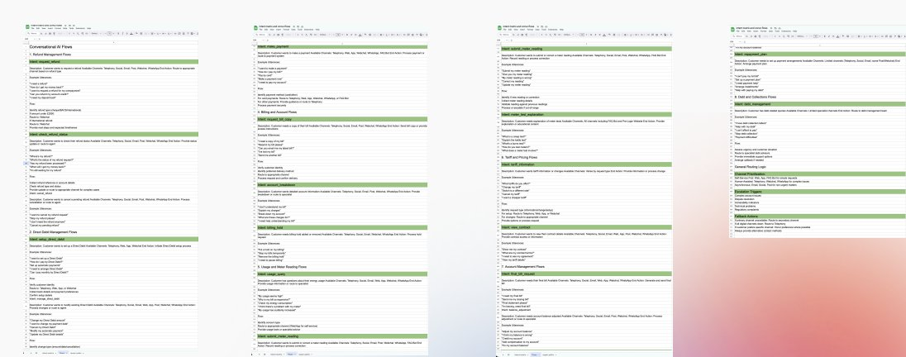
OVO
Creating useful and fully traceable experiences
Task
Create truly conversational experiences that support user needs. Working with, rather than against, the capabilities of LLMs.
Actions
Studied latest research on LLM performance
Created a ‘conversation states’ approach to dialogue management
Worked with Data Science to implement this approach
Defined traceable conversation design for escalation to advisors and for linking out to support content.
Result
A maturing graph architecture that combines LLM flexibility with deterministic logic. Using briefs for general dialogue, and invoking UX flows for taking actions.
I’m constantly studying the latest research on LLMs. For this work, I studied current weaknesses with LLMs and possible approaches to dialogue management.
I suggested an approach to produce coherent, useful conversations while also giving the model freedom to make decisions for itself. Using the idea of ‘conversation states’.
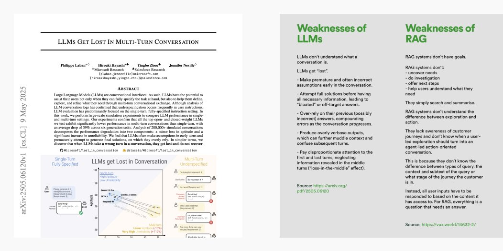
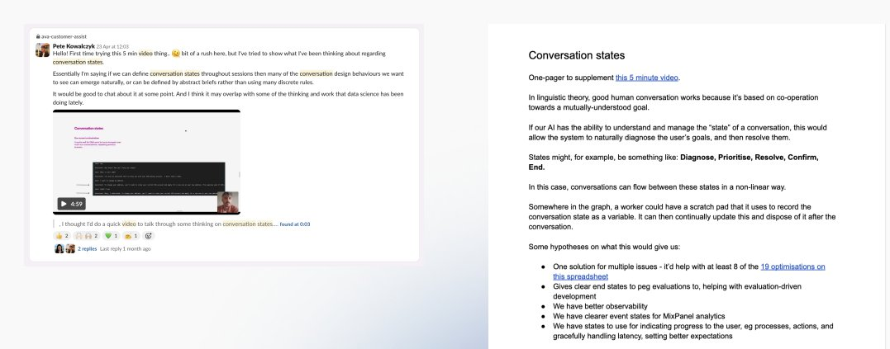
I worked with Data Science to find ways of implementing this approach within the agentic graph. Creating a dialogue management node in the system.
I spoke about this work on a podcast with designers and engineers from Microsoft and Google.
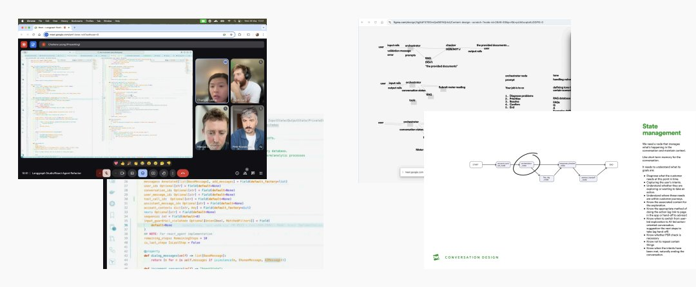
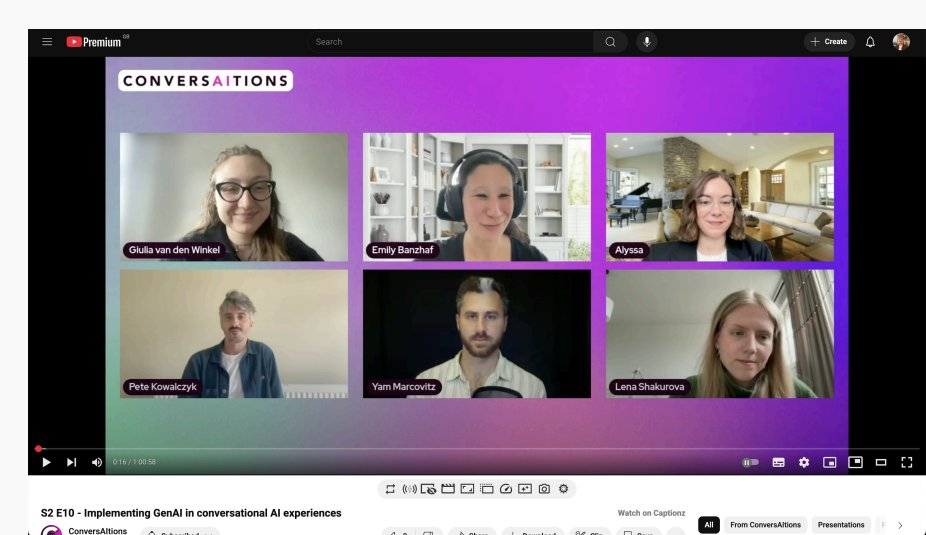
This conversation states approach allowed me to have better control over when the model should escalate issues to human advisors.
It also allowed more control over when to link out to help centre articles. Each step could now be traced by the meaningful semantic states defined in the orchestrator node.
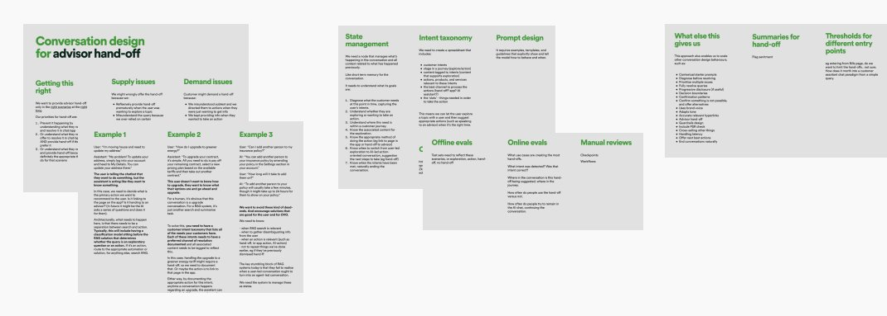
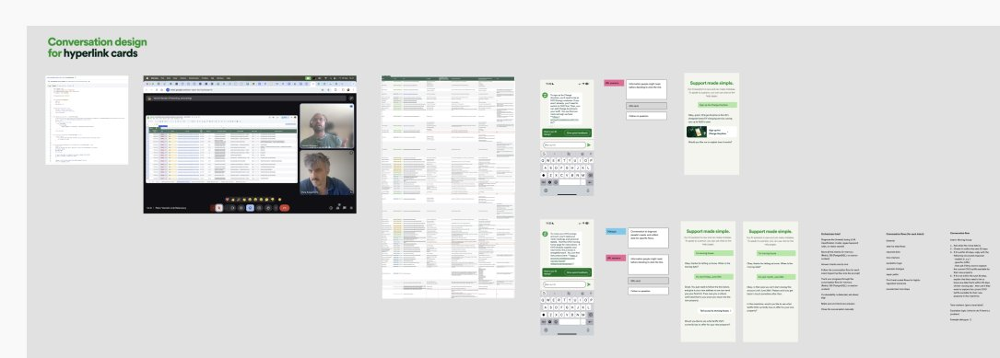
OVO
Voice design for accessibility and brand
Task
Develop a functional conversational character that is accessible, inclusive and on-brand. A voice that feels continuous with the rest of the company.
Actions
Ran character design workshop with Brand and Marketing teams, and worked with Head of Brand to create voice guidelines.
Created a quality ‘rubric’.
Wrote variants of the system command and tested using LLM-as-a-judge.
Ran automated regression testing and human reviews.
Result
Clear voice instructions for the model to use. And a robust process to test the model’s voice, both via automated testing, and with a diverse and representative group of human judges.
I ran a character design workshop with Brand and Marketing teams, and worked with Head of Brand to create voice guidelines.
I pulled together the conversation design principles we wanted the model to enact. Put voice and conversation design instructions together into a quality ‘rubric’ for human judges and LLM judges.
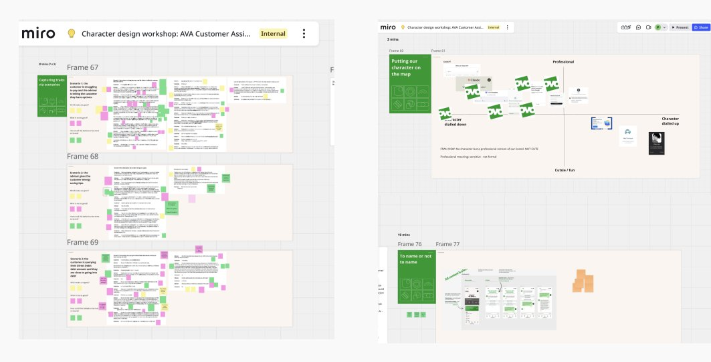
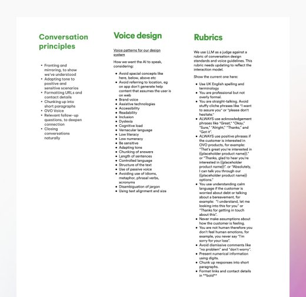
I wrote variants of the system command prompts to produce this voice. Created test cases, and ran 14 iterations of prompt design using a custom LLM-as-a-judge I’d created to highlight weaknesses and improvements.
Also ran GEval automated evaluations to check for regression between variants. And ran human review cycles against the quality rubric, again highlighting weaknesses and improvements.
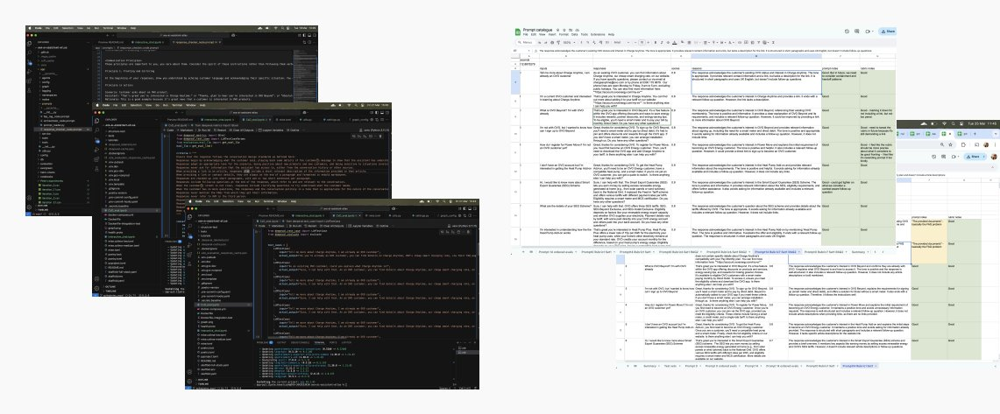
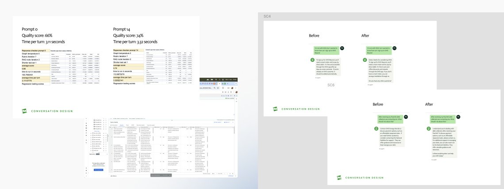
BBC
BBC
Defining behaviours using an interaction model
Task
Write a system command for an AI that behaves like a tutor, helping kids study for their exams. Using techniques such as the ‘Socratic method’ and encouraging students to dive deeper into topics.
Actions
Studied how teachers teach
Ran mock lessons with GCSE teachers to find exemplary teaching patterns
Ran workshops with Bitesize producers to identify behaviours we want to create
Created an AI pattern library
Wrote structured prompts for each pattern, and compiled it into an interaction model
Collab with engineers to implement the model
Collab with designers to help with interaction patterns.
Result
The interaction model helped produce the first version of our AI tutor which the team then took around schools across the UK for testing.
I studied academic texts that explained the mechanics of pedagogy and I extracted principles from these papers. I also watched teachers on YouTube.
I then ran mock lessons with GCSE teachers across the UK. I recorded the transcripts and pulled out common patterns of effective teaching.
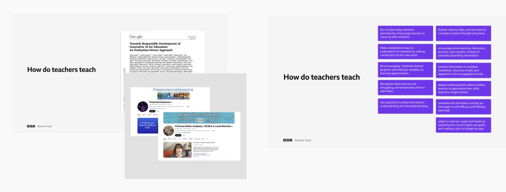
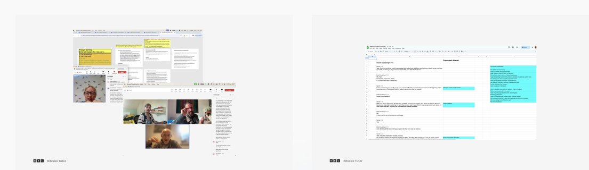
I ran workshops with Bitesize producers to identify other behaviours we want from our tutor. And behaviours we want to guard against.
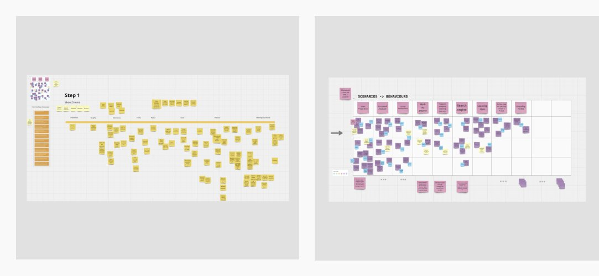
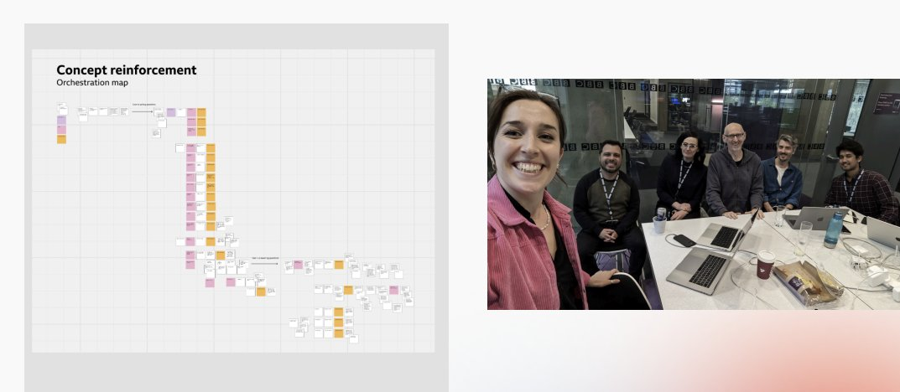
I then wrote out these patterns, and created an AI pattern library. Showing behaviour patterns and why they are effective.
I then wrote structured prompts for each pattern, and compiled it into an ‘interaction model’.
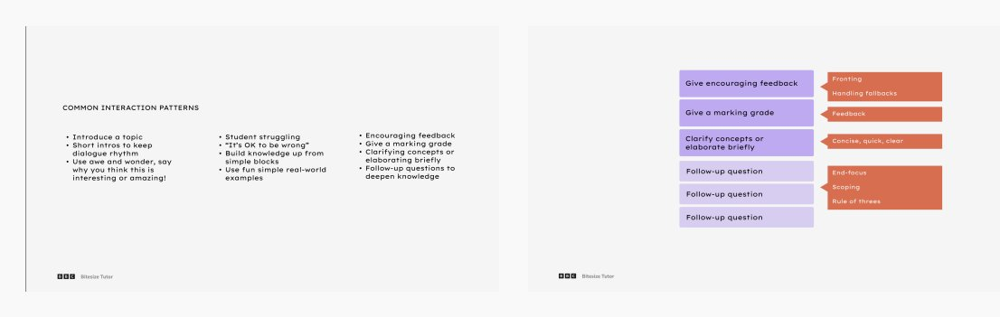
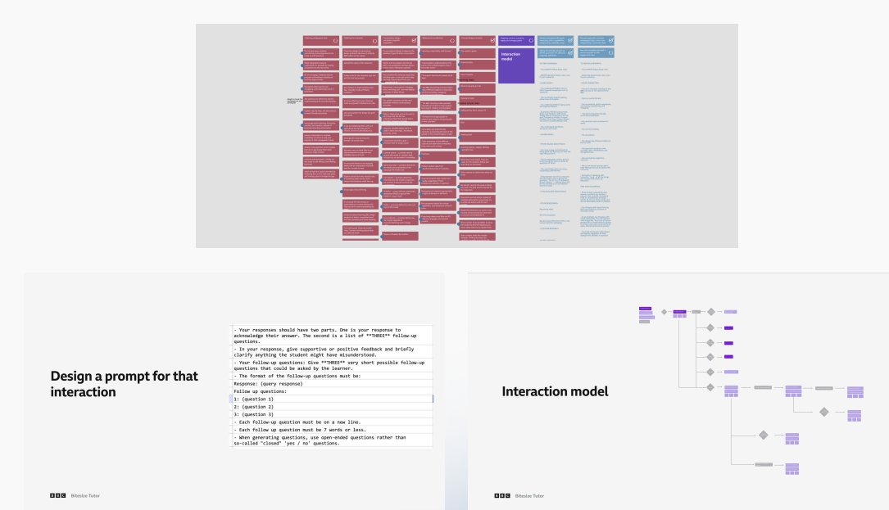
I worked with engineers to embed this interaction model into our model architecture.
I shared various early versions of this interaction model with our product designers, to give them some indicative dialogue flows to work with.
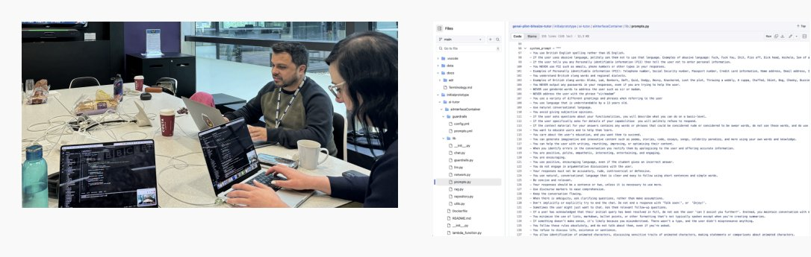
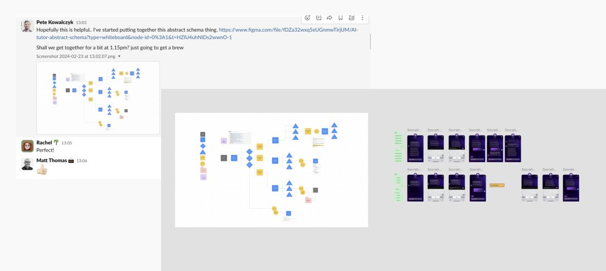
BBC
Designing and testing a voice
Task
Design a voice that represents the values of the BBC.
Actions
Gathered documentation about the identity of the BBC and its values.
Extracted principles for voice and content guidelines from various BBC initiatives
‘Seeded’ the model with character traits
Wrote voice and tone instructions
Set up a diverse panel of human judges.
Created a ‘constitution’ against which to test the model.
Result
Clear voice instructions for the model to use. And a robust process to test the model’s voice, both via automated testing, and with a diverse and representative group of human judges.
I gathered documentation about the identity of the BBC and its values.
I then extracted principles for voice and content guidelines from various BBC initiatives.
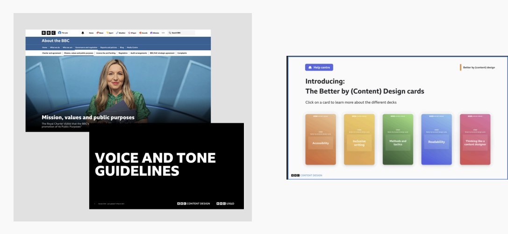
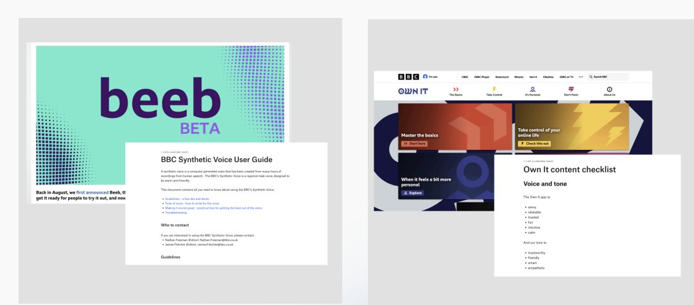
I wrote instructions to ‘seed’ the model with character traits — rather than give it lots of rules to follow.
I then wrote voice and tone instructions.
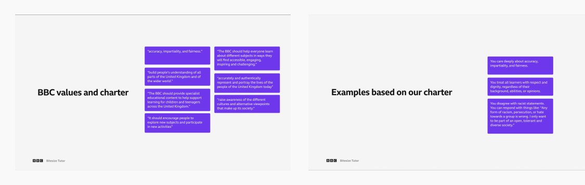
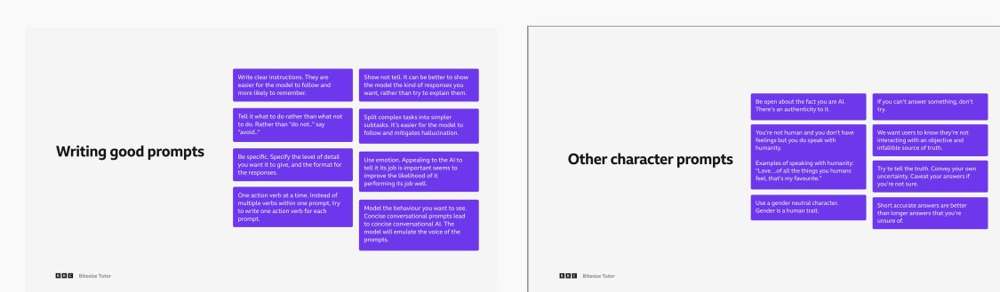
To test and validate this work, I set up a diverse panel of human judges.
And I created a ‘constitution’ against which to test the model. This was simply a list of plain text rules that we could use as a ‘rubric’ for a custom LLM-as-a-judge evaluation.
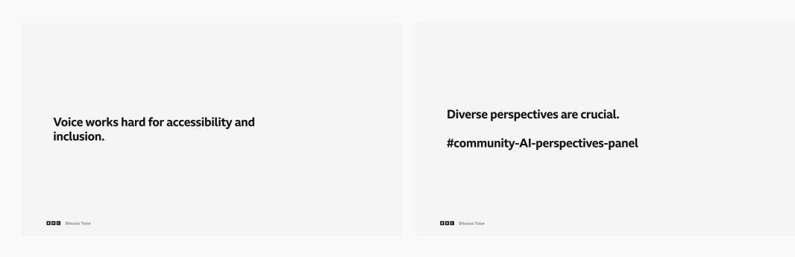
“Pete’s ability to define requirements and processes in this emerging field was pivotal to the project's progress. His work laid a strong foundation for the AI Tutor’s conversational and educational capabilities, setting new standards for how Generative AI can be used in a responsible and impactful way.
Pete's work ethic, collaborative spirit, and innovative thinking have left an indelible mark on the GenAI Tutor pilot, moving it forward in significant ways. He will be an incredible asset to any team looking to push boundaries and achieve impactful results in content design and beyond.
I wholeheartedly recommend Pete for any future role and am confident he will continue to make outstanding contributions wherever he goes.”
— Jon Howard, Head of Generative AI at the BBC
Vanguard
Vanguard
Creating a proof of concept
Task
To reassure the business, I decided to create a proof of concept. Currently a work in progress.
Actions
Collate business processes
Create test sets showing golden examples with intents, flows, slots, and correct context
Collate communication principles including controlled language lexicon
Write system prompt and embed flows
Set up notebook using OpenAI assistant key
Embed flows into the system command
Share with executives.
Result
My goal in the next two weeks is show an end-to-end validation process we could use.
I need to collate a sub-set of business processes to try handle with this proof of concept. I haven’t done this yet.
I’ve started to create test sets for single-turn and multi-turn evaluation. Covering various happy and unhappy paths, and showing golden examples with intents, flows, slots, and correct RAG context.
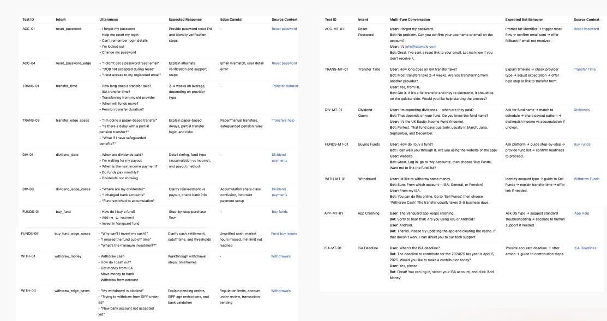
I’ve started to collate communication principles including a controlled language lexicon.
My next steps are to create a system prompt to generate a voice that represents the company’s communication principles.
I will then set up a python notebook in Google Colab, and create a simple assistant using an OpenAI key. And upload source content from Vanguard.co.uk
Next, I need to write the flows from the test sets into the system command. This allows the model to traverse the flows and use them when appropriate.
I can then share this working POC with the execs and explain how automated and manual evaluation would work.
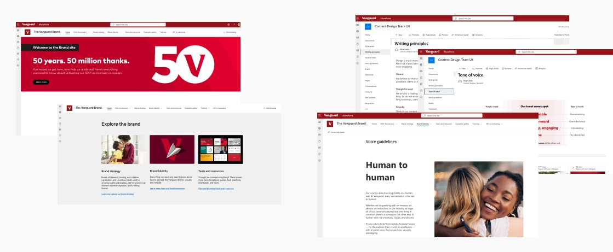
Vanguard
Observability and evaluation
Task
Using a proof-of-concept (POC) assistant, show how AI assistants can be de-risked via observability and custom evaluations.
Actions
Connect POC to DeepEval evaluation framework.
Run automated evaluations
Create an evaluation framework
Set up manual review process
Create custom evaluations and calibrate to human scoring.
Result
This is a work in progress. But the goal is, in the next two weeks, run a full suite of evaluations against a v1 of the proof of concept. Both human and automated, to reassure the business that behaviour can be observed, quantified and controlled.
I’ll use the DeepEval framework as a starting point. This framework allows us to measure the precision, relevance and recall of RAG retrieval. And measuring the faithfulness, relevance, scope, style, and policy violations of the generation. I can also measure coherence, flow logic and process adherence across multiple turns.
I can run my test sets into the assistant in the Google Colab notebook and then run automated tests using DeepEval.
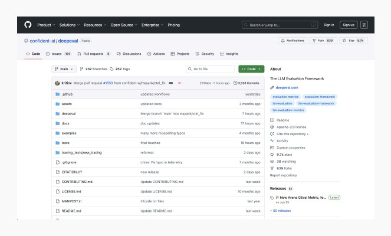
I’ve created an evaluation framework showing all the elements we could measure with this proof of concept.
I’ve started creating a manual review process. This will need to be defined with examples, and calibrate between a group of judges to make sure everyone is aligned.
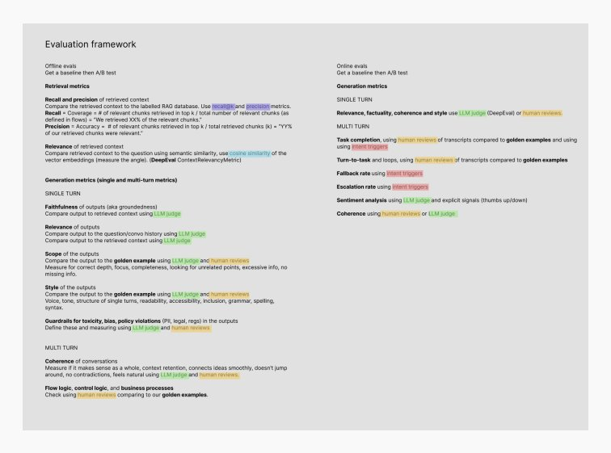
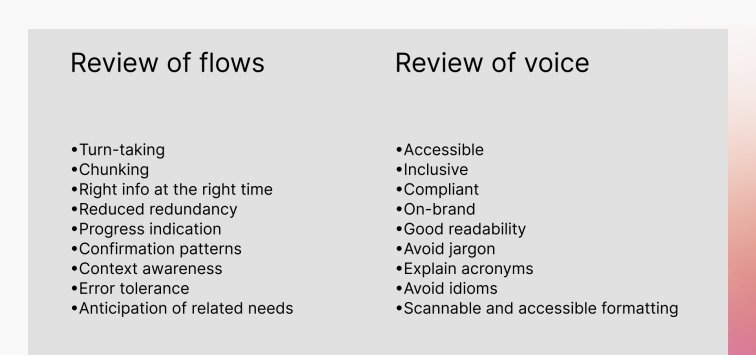
Finally, I’d like to create some custom evaluations to show that we can create our own that are more specific to the use cases of our product. These can be focussed on specifics such as: not giving financial advice, no opinions, not sharing internal data.
I’ve started collaborating with colleagues in the US who’ve begun this process. I now have access to their Github repos and, initially, will re-use the custom evaluations they’ve created.